机器人
机器人按你设定的规则自动发消息。在客户端里可以配置两类机器人：个人机器人在别人给你发单聊时以你的身份代答；群机器人在群里被 @、命中关键词、有新成员入群或到了设定时间时自动发消息。
- 个人机器人：全体员工
- 群机器人：仅群主
- 需要：企业开启「机器人」开关
机器人的种类
| 种类 | 由谁配置 | 在哪里起作用 | 数量上限 |
|---|---|---|---|
| 企业机器人 | 企业管理员，在管理控制台配置，见「企业机器人」 | 本企业的全部群，或管理员所选的群 | — |
| 群机器人 | 群主，在群管理窗口里配置 | 本群；消息带「机器人」标记 | 每个群 5 个 |
| 个人机器人 | 员工本人，在「我的机器人」里配置 | 别人发给你的单聊，以你的身份代答，回复前带「[机器人代答]」 | 每人 3 个 |
个人机器人
个人机器人只在别人发给你的单聊里、满足你设定的条件时以你的身份代答，例如你不在电脑前时，自动回答同事经常问的问题。对方看到的回复前面带有「[机器人代答]」标记。
打开「我的机器人」
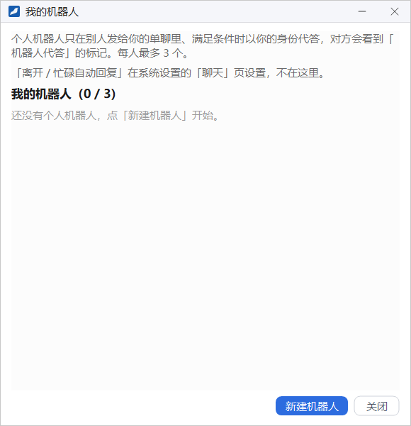
有两个入口：
- 主面板的系统菜单里点 我的机器人；
- 系统设置 → 聊天 页里的 我的机器人。
窗口标题下的「我的机器人（0 / 3）」显示已有几个、最多几个。
新建个人机器人
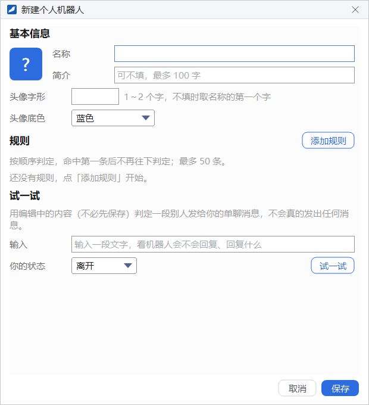
- 在「我的机器人」窗口里点 新建机器人。
- 在 基本信息 里填写 名称（必填）和 简介（可不填，最多 100 字）。
- 按需设置 头像字形（1～2 个字，不填时取名称的第一个字）和 头像底色。左侧会实时显示头像的样子。
- 点 添加规则，设置什么时候代答、回复什么，见下文。
- 用 试一试 检查规则的效果。
- 点 保存。
设置规则
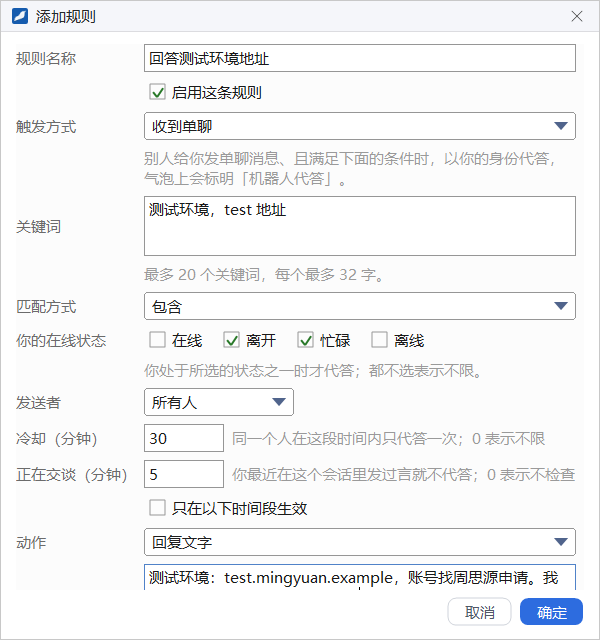
一个机器人可以有多条规则，最多 50 条。收到消息时按顺序逐条判定，命中第一条后就不再往下判定，所以条件越具体的规则越要排在前面。
个人机器人的触发方式固定为 收到单聊：别人给你发单聊消息、且满足下面的条件时，以你的身份代答。动作固定为 回复文字。
| 设置项 | 说明 |
|---|---|
| 规则名称 | 可不填，便于在规则列表里辨认 |
| 启用这条规则 | 取消勾选后这条规则暂不生效，列表里显示为「（已停用）」 |
| 关键词 | 消息里出现这些词才代答。一行一个，或用逗号分隔，最多 20 个，每个最多 32 字。不填表示任何消息都代答 |
| 匹配方式 | 包含、以……开头 或 完全相同 |
| 你的在线状态 | 勾选在线、离开、忙碌、离线中的若干项，你处于所选的状态之一时才代答；都不选表示不限 |
| 发送者 | 所有人；指定的人（点「选择…」从通讯录里选）；指定的部门（从组织架构里选，包含下级部门） |
| 冷却（分钟） | 同一个人在这段时间内只代答一次；0 表示不限 |
| 正在交谈（分钟） | 你最近这段时间在这个会话里发过言，就说明你正在和对方聊天，机器人不代答；0 表示不检查 |
| 只在以下时间段生效 | 勾选后可以选每天、工作日或周末，并设定起止时刻。按服务器的本地时间计算；结束早于开始表示跨零点（如 18:00 至 09:00），两者相同表示全天 |
| 回复文字 | 代答时发出的内容 |
填好后点 确定，规则出现在编辑窗口的规则列表里。每条规则右侧有 编辑、上移、下移、删除，用上移、下移调整判定顺序。
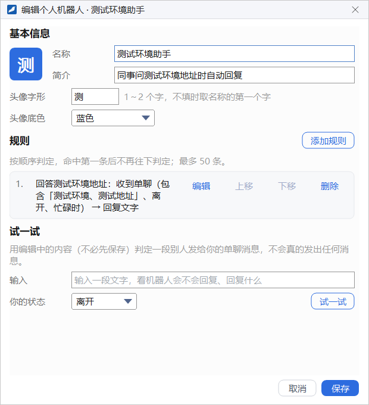
试一试
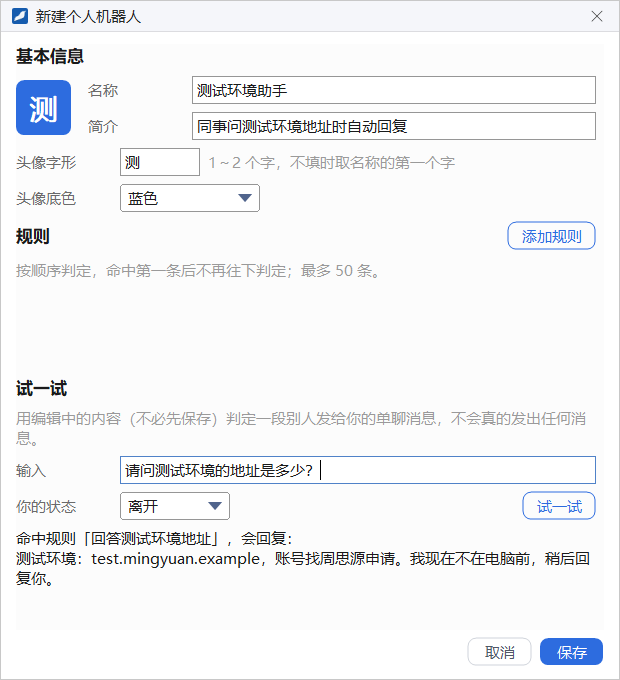
「试一试」用编辑中的内容判定一段别人发给你的单聊消息，不必先保存，也不会真的发出任何消息：
- 在 输入 框里写一段同事可能发来的话。
- 在 你的状态 里选择假设的在线状态。
- 点 试一试。下方显示判定结果，例如「命中规则「回答测试环境地址」，会回复：」以及回复的内容；没有命中时会说明原因，例如没有规则命中这段文字，或命中的规则正在冷却中。
管理个人机器人
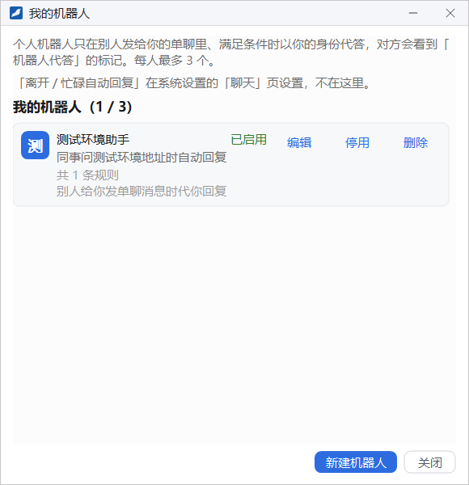
列表里的每个机器人显示名称、状态（如「已启用」）、简介、规则条数和一句用法说明，右侧有四个按钮：
- 编辑：打开「编辑个人机器人」窗口修改。
- 停用 / 启用：暂停或恢复代答，规则保留。
- 删除：删除后它不再代答，规则不能恢复。
创建与使用群机器人
群机器人由群主为本群添加，可以在有人 @ 它、消息命中关键词、有新成员入群或到了设定时间时自动发消息，也可以把外部系统推送来的消息发到群里。
打开群机器人管理窗口
- 打开群管理窗口，在左侧导航点 群机器人（这一页只有群主能看到），见「群管理 → 群机器人」。
- 点 添加与管理机器人，打开「群机器人 · 群名」窗口。
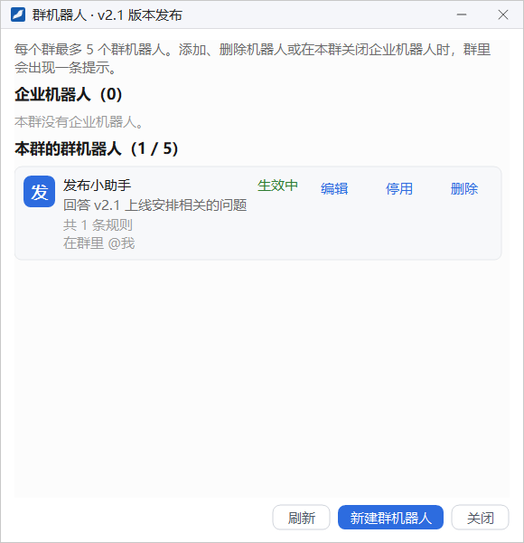
- 企业机器人（N）：企业管理员分配给本群的机器人。管理员允许时，卡片上有 在本群关闭 / 在本群打开；不允许时显示「来自企业，管理员不允许在本群关闭。」
- 本群的群机器人（N / 5）：每个群最多 5 个群机器人。每张卡片显示名称、状态（如「生效中」「已停用」）、简介、规则条数和用法说明，右侧有 编辑、停用 / 启用、删除。
- 底部按钮：刷新、新建群机器人、关闭。
添加、删除机器人，或在本群关闭企业机器人时，群里会出现一条提示，例如「罗俊辉 添加了机器人「发布小助手」」。
新建群机器人
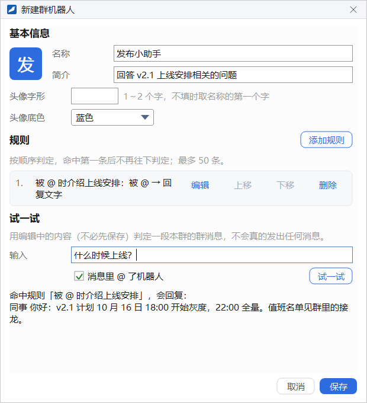
点 新建群机器人，填写方法与个人机器人相同：名称、简介、头像字形、头像底色、规则。群机器人的简介会显示在群成员页签里它的资料卡上。
群机器人的「试一试」判定的是一段本群的群消息，多了一个 消息里 @ 了机器人 勾选框，用来模拟有人 @ 它的情况。
群机器人的规则
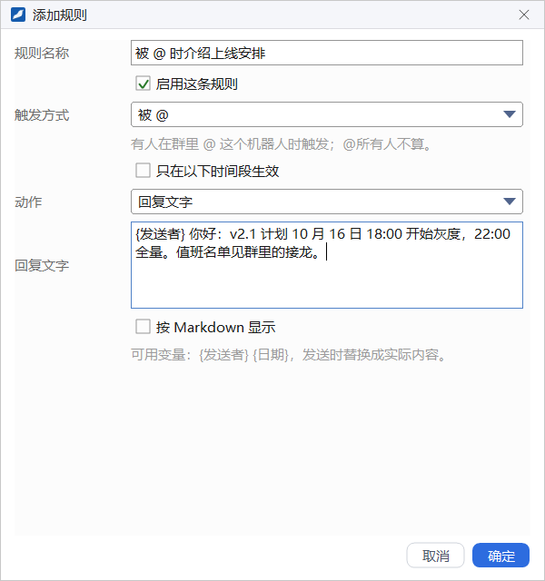
群机器人的规则同样按顺序判定、命中第一条就停，最多 50 条。规则窗口里的项目随 触发方式 变化，例如选「被 @」时只需要设置动作和回复文字。
截图中的规则在有人 @ 机器人时回复一段上线安排，回复文字以变量 {发送者} 开头。
可选的触发方式有：
| 触发方式 | 说明 |
|---|---|
| 被 @ | 有人在群里 @ 这个机器人时触发；@所有人不算 |
| 关键词 | 群消息命中关键词时触发，比较时不区分大小写与全角半角；可以勾选「必须同时 @ 机器人」，避免机器人在群聊中频繁插话 |
| 新成员入群 | 有新成员入群时触发，常用来发欢迎消息 |
| 定时 | 到点时在群里发一条消息，可选每天、工作日、每周所选的几天或每月几号，时刻按 24 小时制填写（如 09:00）；服务停机期间错过的不补发 |
| 外部系统推送 | 企业允许使用外部服务时才有。外部系统推送内容后，由机器人发到群里；这种规则不需要设置动作，推送地址与令牌在机器人的编辑窗口里查看 |
动作 决定机器人做什么：
- 回复文字：发出你写好的回复文字。文字里可以使用变量
{发送者}和{日期}，发送时替换成实际内容；勾选 按 Markdown 显示 后，回复以 Markdown 格式显示。 - 用问答作答：只用于「被 @」和「关键词」。用本群的群问答与企业问答作答，没有找到答案时回复你填写的兜底文字，不填则不回复。
- 呼叫外部服务：只用于「被 @」和「关键词」，并且需要企业允许。把触发的消息发给指定的地址，再把它的应答发到群里。
「新成员入群」和「定时」只能回复文字。除定时与外部系统推送外，其他触发方式都可以勾选 只在以下时间段生效，规则与个人机器人相同。
在群里使用群机器人
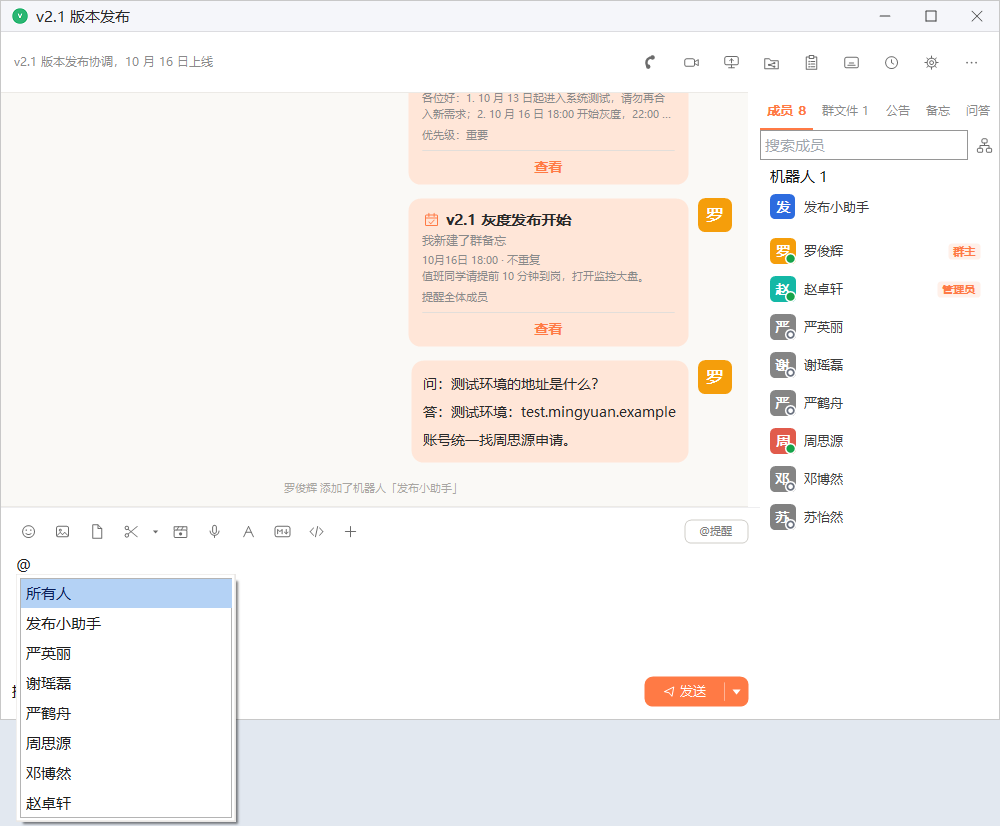
在输入框里输入 @，从候选列表中选择机器人，再输入问题发送即可。机器人回复的消息在名字旁边标有 机器人。在右侧成员页签的「机器人」分组里点一个机器人，可以查看它的资料卡（简介、用法与来源）。
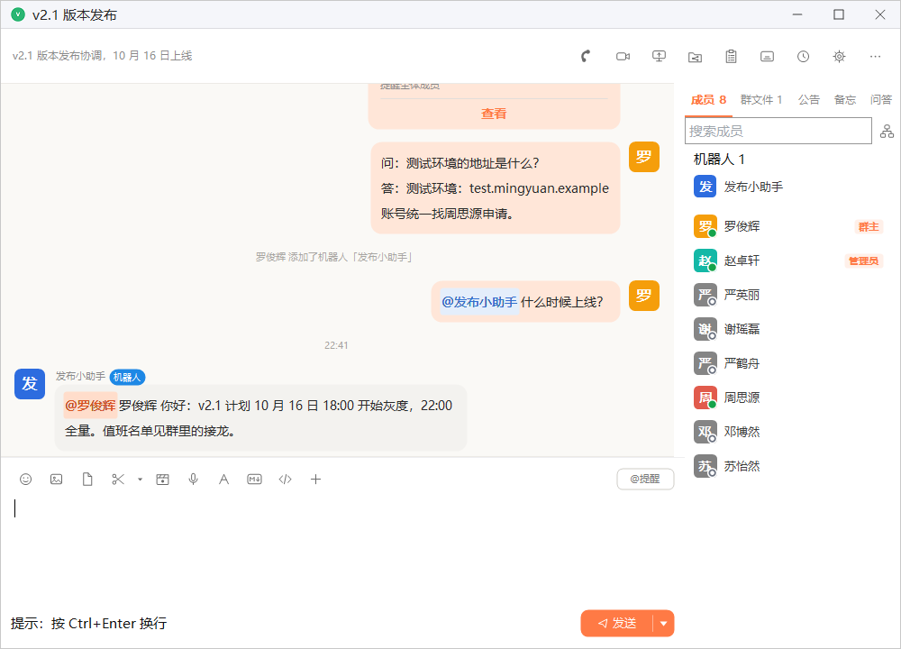